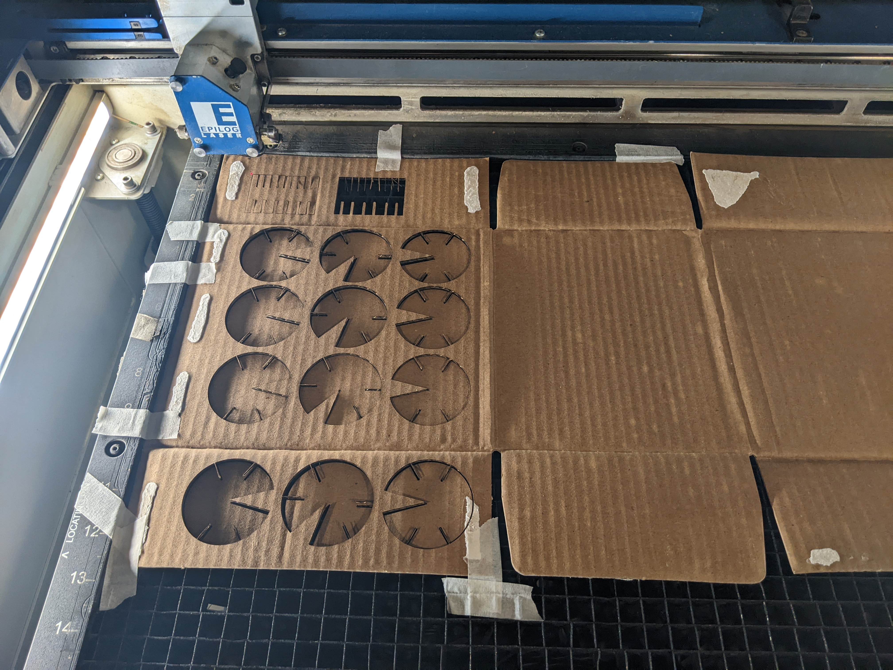

Gina Clepper's Assignment 1!
I stared with some drawing initial sketches of floral shapes, by hand and in Cuttle:
I wanted to make something fun and relaxing to keep at my desk, and I realized I could make lily pads connected by flowers. I was thinking of those desktop Zen gardens some people have and imagining myself moving the little lily pads around. The lily pads would lie flat, floating above the desk because of the flowers:
I made initial designs for lily flowers and lily pads using Cuttle. I placed slots in the lily pads such that lilies could form a circle, and circles could connect to other circles:
I set slots in the lily flowers, too, so they would really interlock. I adjusted the depth of the slots so that there wouldn't be flower-on-flower or lily pad-on-lily pad collisions:
(Apologies for the raster images-- turns out Cuttle has a monthly download limit for free users.)
I used two pieces of cardboard from my recycling bin, one thicker than the other. Using calipers, I took a series of measurements. The thickness seemed to vary throughout the cardboard. For example, for the thicker piece of cardboard with slight water damage, thickness varied from 0.0890 inches to 0.0950 inches.
I designed a gauge to test out a range of slot thicknesses based on these measurements (including the minimum, the average, and the something smaller than the mininimum). I also used my gauge to play with rectangular versus rounded slots:
The thinnest slots I tried (0.08 and 0.03 inches wide) worked best for a snug fit:
I resized the slots to fit the measured cardboard thickness (something that would be nice to do parametrically in the next assignment...):
I laid out 30 each of the lily pads and lily blooms on my cardboard. I used 100% power for both cardboard types. The thinner cardboard cut well at the recommended 25% speed, but the thicker cardboard required going down to 15% speed:

They assembled well! The fit was a little TOO snug, but very secure:
Assembly worked! Here is a 30-piece construction of blooms and lily pads:
And here is evidence of it surviving the shake test!
One unexpected finding: I had 30 flower innards to use as decorative elements -- no waste!
Another unexpected finding: a cool thing happened with the shadows. When turned one way, the lily pads were most apparent, and vice versa for the flowers:


In the future: I might make the slots less tight. They're secure but not fun to put together, which is part of the appeal of a construction kit. Also, the partial petals on either side of the lily bloom slots are too delicate and need to be beefed up a bit.
Settings: Power 100%, Speed 15-25% based on cardboard.
Source vector files:
lily pad and
lily bloom
Model files:
lily pad and
lily bloom